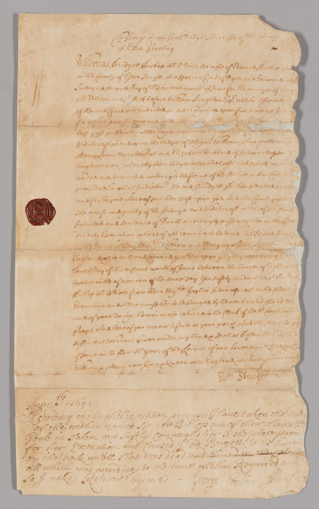
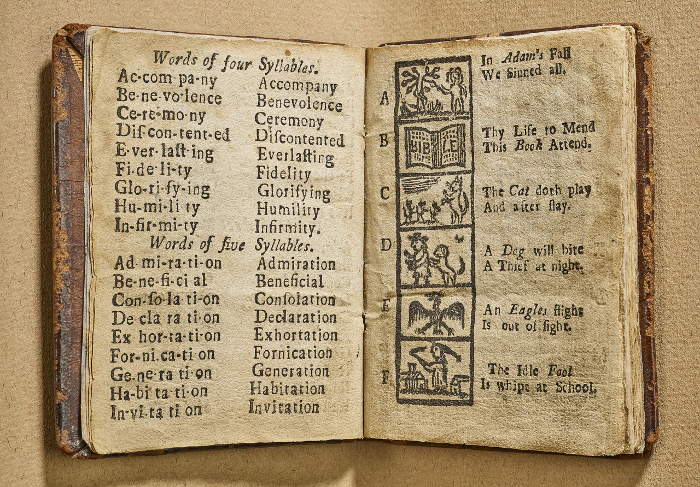

The Case


In 1692, a group of very religious people in Massachusetts said their neighbors were witches. They tried the people they accused in court. By the end of it all, twenty people were put to death.
Today, we know the accused were innocent. Your job is to find out how this happened.
You will read real records from 1692. You will collect evidence to create a case file. At the end of this project, you will report what went wrong.
Investigator Rules
- We study the evidence, not the "witches." No one in this case was actually a witch.
- The accused were real people. Today, millions of people around the world are their descendants. Treat their names with respect.
- Every claim needs a source. We need to ask every source questions.
- Investigators can disagree. Back up your ideas with evidence.
Day 1: Open the Case
Open the museum tour. It shows a real exhibit at the Peabody Essex Museum in Salem.
Walk through the rooms. Find one real document from 1692. Fill in Evidence Tag 1:
- What kind of document is this?
- What do you notice?
- What do you wonder?
N.B. We don't have any images from the time of these events. Nobody drew pictures of the trials in 1692. Every painting about the Salem accusations was made later. How would an artist know what anyone or anything looked like?
"The Salem Witch Trials 1692 (2020 Exhibition)." Peabody Essex Museum, www.pem.org/exhibitions/1692-the-salem-witch-trials.
"Teacher Resources." Salem Witch Museum, salemwitchmuseum.com/teacher-resources/.
Day 2: Village and Town
There were two Salems in 1692. Salem Village was a farm town. Today it is called Danvers. Salem Town was a busy port by the sea.
Visit each stop on the museum's online tour. For each one, write on your map card:
- Village or Town?
- What happened here?
We will read some stops together. For each stop, try to answer both questions. You do not need to read every word!
Salem Village stops
- The Parsonage foundation (opens in a new tab)Read together
- Find: Who was the first girl to get sick?
- Find: When did people dig up the foundation?
- The Village Meetinghouse site (opens in a new tab)
- Find: On what date were the first three accused people questioned here?
- Find: Name one person who was questioned here.
- The Rebecca Nurse Homestead (opens in a new tab)
- Find: How old was Rebecca Nurse in 1692?
- Find: What did the jury decide at first?
Salem Town stops
- The 1692 Courthouse site (opens in a new tab)Read together
- Find: Who was the chief judge?
- Find: How many people were hanged?
- The 1692 Jail site (opens in a new tab)
- Find: Two words that describe the jail.
- Find: What did prisoners have to pay for?
How can trouble start in one place and end up in another?
"Witch Trials Online Sites Tour." Salem Witch Museum, salemwitchmuseum.com/witch-trials-guided-tour-list/.
"Salem Town and Salem Village." Encyclopedia.com, www.encyclopedia.com/social-sciences/social-sciences-magazines/salem-town-and-salem-village.
Day 3: Whose Land?
Long before 1692, this land had another name: Naumkeag. It means "fishing place."
The people of Naumkeag farmed, fished, and traded here. Between 1616 and 1619, a sickness brought by English traders killed many of them. English settlers arrived in 1626. They took more and more land.
Naumkeag people did not disappear. Some of their descendants still live in Massachusetts today.
Fill in your Place Profile
- What was this place called first?
- Who lived here?
- What changed when the English came?
The Frontier War
In 1692, English towns in Maine were at war with Wabanaki people and their French allies. Many English families ran south to towns like Salem.
Historian Mary Beth Norton thinks this war helped cause the witch trials. Fear of attack, she says, turned into fear of witches.
Other historians say she goes too far. They think the war was one cause among many.
What do you think? What evidence would help you decide?
"This Land is Naumkeag (Salem 400+)." Destination Salem, www.salem.org/blog/this-land-is-naumkeag-salem-400/.
"Massachusetts Indigenous Community Resources." Salem Historical Society, www.salemhistorical.org/massachusetts-indigenous-community-resources.
Norton, Mary Beth. In the Devil's Snare: The Salem Witchcraft Crisis of 1692. Alfred A. Knopf, 2002.
Day 4: The Puritan World
Puritan children learned to read from a small book called The New England Primer. A printer named Benjamin Harris first made it in Boston around 1690. Puritans believed every person should be able to read the Bible.

Read these lines from the Primer's alphabet. Mark the words you don't know.
In Adam's Fall We sinned all. Thy Life to mend This Book attend. The Cat doth play And after slay.
Word bank: mend = fix. attend = pay attention to. doth = does. slay = kill.
N.B. Compare the lines above with the picture. In some places, the printer used capital letters and slanted words. Can you find them?
N.B. Printers in the 1700s used a "long s." It looks like an f. Find it in the word "slay."
Talk it over
- Who was this book for?
- What does it want children to think and feel?
- What can you infer about what Puritans worried about?
N.B. No copy of the first Primer survives. The oldest copy we have was printed in 1727. That was 35 years after the trials.
Another old copy says "God's Book attend" instead of "This Book attend."
Why might two copies of the same book be different? What does that mean for investigators?
The New-England Primer Enlarged. S. Kneeland and T. Green, 1727. Rare Book Division, New York Public Library.
"The New-England Primer." New York Public Library, www.nypl.org/events/exhibitions/galleries/childhood/item/4109.
Day 5: Scene Summary
The case happened in in the year .
Before the English came, the land was called . It means .
There were two Salems: Salem and Salem .
Puritans believed .
One question I still have: .
Week 1 Vocabulary
- colony
- a place ruled by a faraway country
- settler
- a person who moves to a new place to live
- Indigenous
- the first people to live in a place
- Puritan
- an English Protestant who wanted a stricter, simpler church
- minister
- a church leader who preaches
- meetinghouse
- a building used for church and town meetings
- village
- a small town
- infer
- to reach a conclusion based on the facts you have
- source
- something that provides information or facts
- evidence
- information we use to decide whether something is true